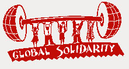
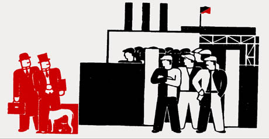

This is the news page for Department 400 - Manufacture and General Production. This page displays *all* news items from this Department and its Unions. To see news only from a particular Union, click on the Union title below.
For an overview of the IWW's Union structure, please visit the Unions homepage.
Submitted on Tue, 03/11/2008 - 2:36pm
By Mike Pesa
Mexican factory workers from the Coalition for Justice in the
Maquiladoras (CJM) are on an IWW-cosponsored truth-telling tour
through North America, sharing their first-hand perspective on the
effects of NAFTA and their struggle for justice in the factories and
slums of northern Mexico. The tour is focused around a March 13 day
of
action in Detroit against automotive parts manufacturer Key Safety
Systems and its corporate customers, including Ford, General Motors,
and Hyundai. The tour kicked off in Philadelphia on March 4th where
the IWW hosted worker-organizers Israel Monroy and Perla Cruz. In
February, Cruz was illegally fired from Key Safety Systems' plant in
Valle Hermoso, Mexico (near the Texas border) for organizing a
workers' committee.
On Wednesday, March 5th Monroy and Cruz went to New York City for a
day to meet with IWW members and allies there. While in New York they
participated in the NYC branch's protest of Panera Bread, which is
being targeted for its unfair labor practices and union busting.
They
were accompanied by Justin Vitiello of the Philadelphia branch, who
acted as their translator throughout the week. Returning to
Philadelphia, the visitors attended an IWW-sponsored protest at
Springfield Hyundai, where the manager accepted a letter urging
Hyundai to put pressure on Key Safety Systems. The protest was joined
by Irish activist Andrew Flood who was on a speaking tour of his own.
Following the protest, Monroy and Cruz spoke to a class at Temple
University. Interest was so great that students' questions had to be
cut off at one point.
Submitted on Mon, 11/27/2006 - 12:06am
By Marie Trigona - Znet, November 09, 2006.
In recent years leading up to Argentina's 2001 financial crisis, thousands of factories have closed and millions of jobs have been lost. Many workers have decided to defeat the destiny of unemployment, taking over their workplace and recuperating their dignity as workers. More than 180 recuperated enterprises are up and running, employing more than 10,000 Argentine workers at cooperative-run businesses, which were closed down by bosses and reopened by employees. In almost all cases workers took over businesses that had been abandoned or closed by their owners in the midst of a financial crisis.
Many worker controlled factories today face hostility and frequently violence from the state. Workers have had to organize themselves against violent eviction attempts and other acts of state violence. This impacts the workers and the enterprises as it means that employees have to leave the work place, invest energy in a legal battle and fight for laws in favor of worker recuperated businesses.
To counter oppose an uncertain legal future, many recuperated enterprises have mobilized to press for the government to resolve their cooperative's legal status. On October 27, workers from Renacer domestic appliance cooperative, CUC worker run shoe company, BAUEN hotel, City Hotel, Bahía Blanca ex-Paloni slaughter house, La Foresta meat packing cooperative and Zanon-FaSinPat worker run ceramics plant rallied outside a federal court to push for a national expropriation law.
Submitted on Mon, 11/14/2005 - 4:21am
Report by
http://www.doro-chiba.org Published: 13/06/05
November 5-6, 2005
Speech By NAKAMURA Yoshimasa
Vice-President, MINATO-GODO (Metal and Machinery Workers’ Union in Osaka)
Last November, Brother Pak Sang Yun of KCTU suddenly passed away. He made a powerful and moving speech at the last November rally. We express our deep grief.
At the beginning of this rally, we ask all of you to give a silent prayer for Brother Pak San Yun and all the brothers and sisters who are falling down in madness with anger at class struggle. Please stand up!
Please close your eyes and pray for them.
Offer a silent prayer for Brother Pak Sang Yun.
Brothers and sisters from around Japan, and from the United States of America and South Korea! Thank you for your participation in this rally. I greet you on behalf of the three unions that have organized this rally. Today’s rally, called for by the three unions, is the eighth of our annual November National Works’ Rallies.
We are very glad to see that year-by-year the number of participants has been growing and that this rally has been gathering a wide range of people who seek international solidarity.
Submitted on Sun, 11/06/2005 - 9:38pm
Disclaimer - The following article is reposted here because it is an issue with some relevance to the IWW. The views of the author do not necessarily agree with those of the IWW and vice versa.
By Jorge Martin - November 3, 2005 (original article from www.znet.org).
Caracas. "This is an historical gathering. For the first time workers from occupied factories from across the continent are meeting together" (Serge Goulart, United Workers' Council of Brazilian group of occupied factories)
"We have shown how the workers can run the companies, and this means we can run society as well" (Ricardo Moreira, PIT-CNT, Uruguay)
More than 400 people from 235 worker occupied factories and 20 different national trade union centres participated in the "First Latin American Gathering of Worker Recovered Factories" in Caracas on October 27-29.